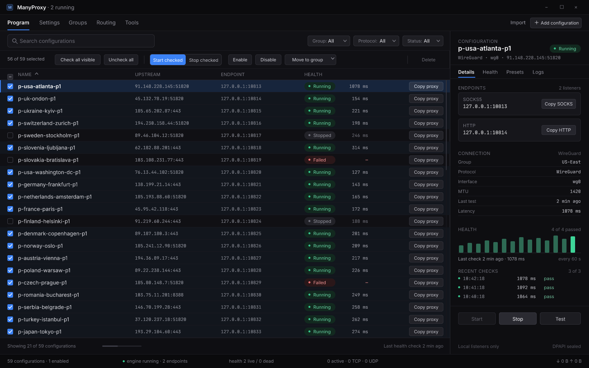
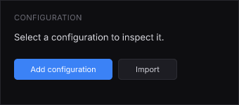
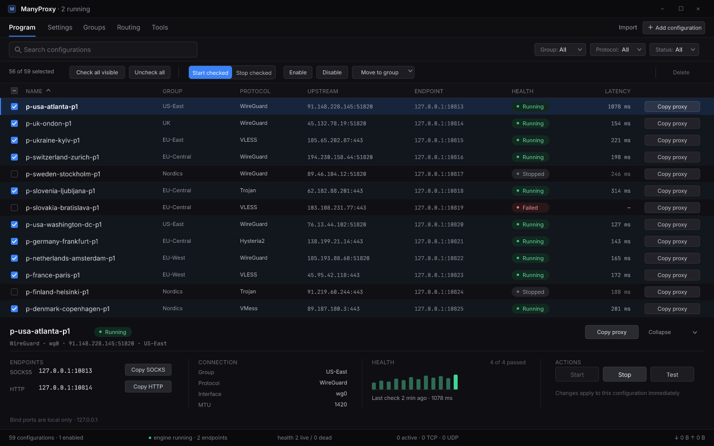
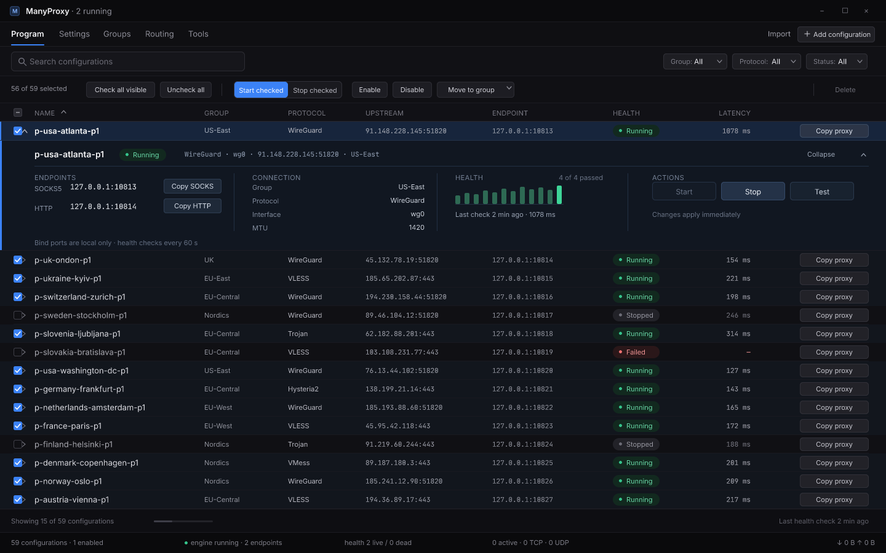

ManyProxy · UI directions
One library, three answers to density and detail.
The same 59-configuration library at 1440 × 900. Bulk start/stop and per-row copy are the two jobs; the variants only change where the selected configuration's detail lives. Near-black surface, 6 px chips, one blue accent. All copy is static.
Row body 13 px
Metadata 11 px
Headers 11 px, uppercase
Accent = selection + primary start
| Variant | Rows | Selected detail | Copy entry point |
|---|---|---|---|
| A — Dense table + inspector | 30 px · 21 visible | 340 px right inspector | Row chip + Copy SOCKS / HTTP |
| B — Full-width table + drawer | 34 px · 13 visible | 226 px bottom drawer | Row chip + drawer endpoints |
| C — Inline expandable rows | 30 px · 15 visible | 180 px in-place band | Row chip + band endpoints |
A
Dense table + right inspector

- Densest scan. 21 rows at 30 px, with status and latency in the Health cell; 56 of 59 selected stays visible above the table.
- Detail never leaves. The 340 px inspector keeps endpoints, health history and Start/Stop/Test beside the list while selection moves.
- The cost. The table loses 340 px, so Group and Protocol stay behind filters; comparing two configs means switching selection.

Inspector empty state
No selection: one line plus Add configuration / Import. The inspector only claims its 340 px when a row is chosen; otherwise the panel is a clear next step, not dead chrome.
B
Full-width table + bottom drawer

- Widest comparison. Group, Protocol and Latency become real columns; 34 px rows carry 13 configurations without losing the table to a side panel.
- A dedicated detail room. The 226 px drawer shows both endpoint copies, connection values and health without squeezing row width.
- The cost. An open drawer hides roughly six rows, and the selected row's state is read twice: once in the table, once in the drawer.
Drawer shown expanded; the header Collapse control returns it to the strip.
C
Inline expandable rows

- One surface. 30 px rows, 15 visible; the selected row opens a 180 px band directly beneath it — no panel, no drawer.
- Strongest copy loop. Row name, port and both Copy buttons stay in the same column context; Start and Test sit one line below.
- The cost. Expanding shifts every row below; comparing two configs requires collapsing one first, and the band adds 180 px to the scroll.
Band shown open on row one; the row chevron and Collapse control close it in place.